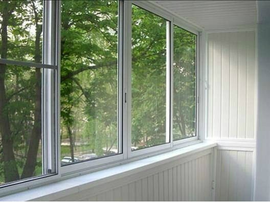

Экватор · Ижевск
Окна и остекление в Ижевске
Подбираем и устанавливаем пластиковые окна. Обсудим остекление квартиры, балкона или дома.
Рассчитать остекление
ПРИМЕРЫ РЕШЕНИЙ
Остекление под ваше помещение
Посмотрите примеры остекления дома и квартиры. Для расчёта уточним размеры проёмов и пожелания по открыванию створок.
Рассчитать остекление